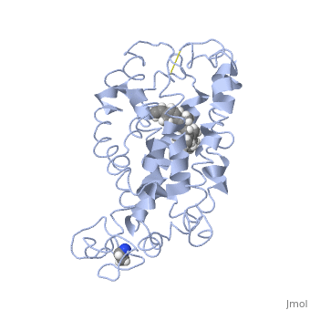

Introduction of Protein Under Investigation

PCD Sample Conditions
| Protein Name : | Rhodopsin |
| Concentration : | 2.5 µM |
| Buffer : | 2mM Sodium Phosphate (pH 6.0) containing 0.05% Dodecyl-Maltoside (DM) detergent molecules. |
| All the sample mixtures were prepared and placed into the CD Spectrometer under dim red light conditions. | |
Being Studied In This Experiment
| Protein Name : | Rhodopsin |
| Member of : | G protein-coupled receptor (GPCR) family |
| Occurance : | it accounts for 2% of the human genome. |
| Protein: Topology : | This protein spans the membrane of the rod cell, and is therefore called a transmembrane protein. |
| Function : | Extremely sensitive to light, enabling vision in low-light conditions |
Details
In this experiment we will measure the far-UV CD spectra (195-260nm) of rhodopsin in the presence of DM micelles at various temperature points to determine the Tm of the folded and unfolded state of rhosopsin.